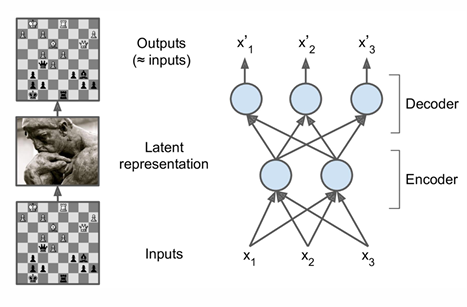

Before running the code examples in this document, ensure you have TensorFlow installed. You can install it using the following command:
Conceptual Overview
Analogy: Autoencoders can be thought of as a way to compress and then decompress data, similar to how a zip file reduces the size of files for storage and later restores them to their original form.
Why Use Autoencoders?
Dimensionality Reduction: Autoencoders can reduce the dimensionality of the input data, which is useful for visualization, feature extraction, and denoising.
Anomaly Detection: By learning the normal patterns in the data, autoencoders can detect anomalies or outliers.
Generative Modeling: Autoencoders can generate new data samples by sampling from the learned latent space.
Extract Meaningful Features: The compressed representation can capture meaningful features of the input data.
Architecture
An autoencoder consists of two main components:
Encoder: This part of the network compresses the input data into a latent-space representation.
Decoder: This part reconstructs the input data from the compressed representation.
Visual Diagram

Autoencoder - Visual Representation
Undercomplete Autoencoders
An undercomplete autoencoder is one where the dimensionality of the latent space is lower than the input space. This forces the autoencoder to learn a compressed representation of the data.
PCA Analogy: If only using linear layers and MSE loss, an undercomplete autoencoder behaves like Principal Component Analysis (PCA).
import numpy as npfrom tensorflow import kerasfrom tensorflow.keras import layersinput_img = keras.Input(shape=(784,))encoded = layers.Dense(32, activation='relu')(input_img)decoded = layers.Dense(784, activation='sigmoid')(encoded)autoencoder = keras.Model(input_img, decoded)autoencoder.compile(optimizer='adam', loss='mse')# Training# define x_trainx_train = np.random.rand(1000, 784) # Example training data for autoencoderautoencoder.fit(x_train, x_train, epochs=20, batch_size=256, validation_split=0.2)
<keras.src.callbacks.history.History at 0x1a03a142f60>
Convolutional Autoencoders
Convolutional autoencoders are used for image data and leverage convolutional layers for encoding and decoding. They are particularly effective for capturing spatial patterns in images.
Architecture
Encoder: This part of the network uses convolutional layers to compress the input image into a latent-space representation.
Decoder: This part reconstructs the input image from the compressed representation using transposed convolutional layers.
Recurrent Autoencoders
Recurrent autoencoders are used for sequential data, such as time series or text. They leverage recurrent neural networks (RNNs) or long short-term memory (LSTM) networks for encoding and decoding sequential data.
Architecture
Encoder: This part of the network uses RNN or LSTM layers to compress the sequential input data into a latent-space representation.
Decoder: This part reconstructs the input sequence from the compressed representation using RNN or LSTM layers.
Denoising Autoencoders
Denoising autoencoders are trained to remove noise from the input data. They are useful for learning robust representations of the data.
Architecture
Training: The autoencoder is trained on noisy input data and learns to reconstruct the clean input data.
Loss Function: The loss function used during training is typically Mean Squared Error (MSE), which measures the difference between the input and the reconstructed output.